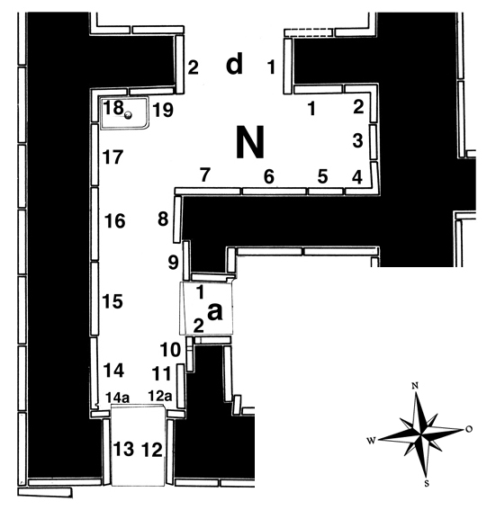

Room N
The small room N is a side room to banquet hall G, connecting it to the narrow passage P, which offers access to the service area in the southeastern part of the palace. Representations on the reliefs of rooms N and P form a continuous composition.
Layard found 19 slabs in room N, none of which he sent to the British Museum – two fragments (of reliefs N-1 & N-6) that are in the museum today, appear to have arrived there at some later time. Reliefs were given to various collections and, as was the case for room L, some of them remained in situ, with just the heads of the figures removed (N-1, N-6 & N-7). Slab N-14 should probably also be counted among those, since it appears that during the process of cutting out the head, its upper part broke off and the attempt was abandoned. One relief (N-11) is completely lost.
Click on N in the middle of the room to see all panels positioned in their respective walls, or on the individual panels along the inner walls and in the entryways to go to CDLI pages associated with them.
 |
Relief Slabs by Collection (duplication results from individual fragments in different places)
Abegg Foundation, Bern, Switzerland |